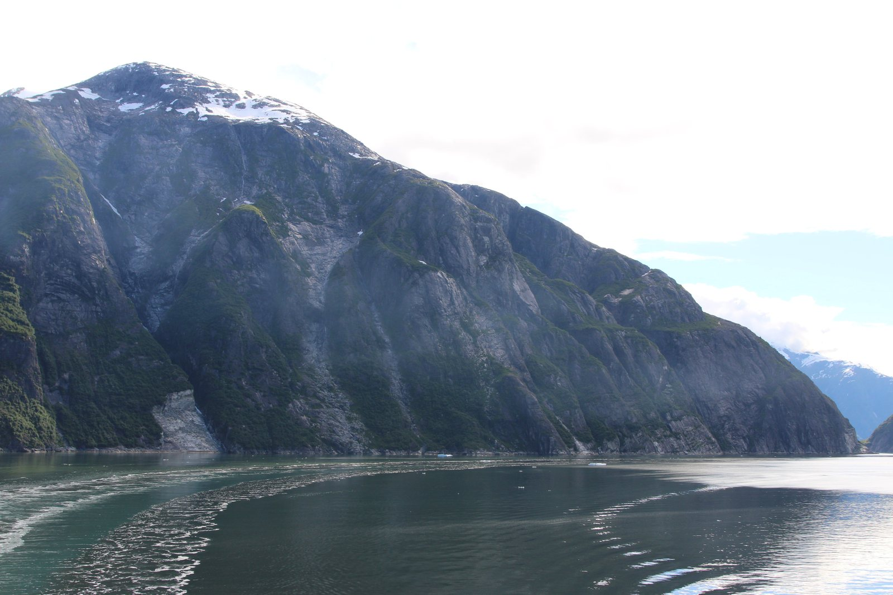

Independent since 2003
Field-proven imaging evaluation.
Independent field and bench evaluation of cameras, phones and aerial imaging systems - and the metadata they leave behind.

Services
Field evaluation
We take cameras, lenses and phones where your people will use them: harbours, glaciers, building sites and night streets. Every evaluation ships with the untouched files so you can check our working.
Colour bench & calibration
Reflective and transmissive targets, controlled still lifes and repeatable lighting. We profile bodies for archives, museums and e-commerce studios.
Mobile imaging lab
From Florence, we benchmark smartphones and tablets as people actually use them: auto mode, default app, the scene in front of them.


Latest news
Where we work
Copenhagen
Headquarters, colour bench and ingest desk
Nordhavn studio (since 2019). Visits by appointment.
Florence
Mobile Imaging Lab
Smartphone and tablet evaluation, opened September 2015.
Boulder
Aerial & Action Systems
Drones, action cameras and stabilisation rigs, opened May 2016.